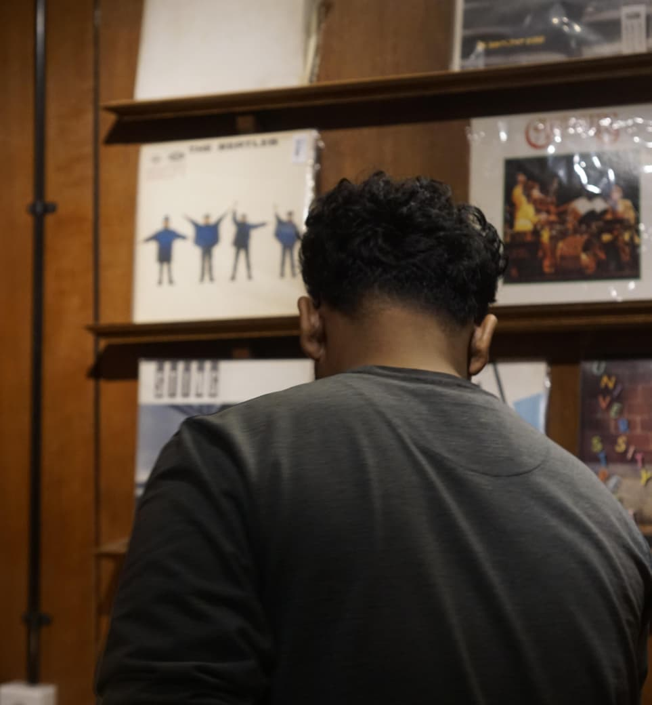

Poster, branding & konten digital.
Mahasiswa • Designer • Digital Explorer
Halo Semuanya Selamat Datang Di Portofolio Saya
Saya Yogi Firnanda Saputra, mahasiswa Teknik Informatika di Universitas Muhammadiyah Kalimantan Timur yang memadukan teknologi, desain grafis, dan eksplorasi digital dalam setiap proyek.

UI • Visual • Web
Open for projects
UMKTTeknik Informatika
Teknik Informatika & eksplorasi sistem digital.
Terbuka untuk proyek kreatif dan organisasi.
01 — Tentang saya
Profile yang sederhana, arah yang jelas.
Saya tertarik pada titik temu antara teknologi dan komunikasi visual. Bagi saya, desain bukan hanya soal tampilan, tetapi tentang bagaimana ide dapat dipahami lebih cepat, terasa lebih dekat, dan meninggalkan kesan.
NamaYogi Firnanda Saputra
Program StudiTeknik Informatika
FakultasSains dan Teknologi
UniversitasUMKT
02 — Keahlian
Tools yang saya gunakan untuk membentuk ide.
Fokus pada desain visual, eksplorasi antarmuka, dan workflow digital yang rapi.
Adobe Photoshop
Komposisi visual, manipulasi foto, dan social media artwork.
Adobe Illustrator
Logo, vector, identitas visual, dan elemen brand.
CorelDRAW
Layout, poster, publikasi, dan materi cetak.
UI & Web
Struktur halaman, responsive layout, dan micro-interactions.
03 — Selected work
Poster • Branding • Digital ExperienceBeberapa arah kreatif.
01
Campaign Design
Visual yang bercerita tanpa terlalu banyak kata.
Eksplorasi poster dan campaign dengan hierarki visual yang kuat, kontras terukur, dan pesan yang mudah dipahami.
Diskusikan proyek →02
Brand Identity
Membuat karakter visual yang konsisten.
Eksperimen dengan logo, sistem warna, dan komponen visual untuk kebutuhan organisasi dan personal brand.
Lihat proses →03
Web Portfolio
Interface modern untuk pengalaman yang lebih nyaman.
Responsive grid, whitespace, animasi ringan, dan fokus pada aksesibilitas dasar.
Baca catatan →04 — Kartu tanda siswa
Identitas akademik dalam satu kartu digital.
Kartu ini menampilkan data mahasiswa yang Anda berikan dan dapat dibuka pada layar penuh.
UNIVERSITAS MUHAMMADIYAH
KALIMANTAN TIMURFAKULTAS SAINS DAN TEKNOLOGI
KARTU MAHASISWAKALIMANTAN TIMURFAKULTAS SAINS DAN TEKNOLOGI

Nama
Yogi Firnanda Saputra
NIM2511102441170
Program StudiTeknik Informatika
FakultasSains dan Teknologi
Samarinda • Kalimantan TimurMahasiswa Aktif
05 — Testimoni
Yang paling berarti adalah hasil kolaborasi.
Contoh layout testimoni yang bisa Anda ganti dengan komentar klien atau rekan organisasi.
“
Komunikasi idenya enak dan revisinya cepat. Hasil visual tetap punya karakter tanpa kehilangan tujuan utama.
A
Hanif Anugerah Ramadhan — Project PartnerCreative Project
“
Layout yang dibuat terasa modern dan rapi. Detail kecil seperti spacing dan hierarki teks benar-benar membantu.
N
Muchlis aditya — OrganizationCampus Event
“
Enak diajak brainstorming. Ide yang awalnya masih abstrak bisa diterjemahkan menjadi konsep visual yang jelas.
R
Aldy Akbar Maulana — CollaboratorDigital Campaign
06 — Blog pribadi
Buka semua artikel →Catatan, proses, dan eksperimen.
Bagaimana memilih hierarki visual untuk poster yang padat?
Prinsip sederhana untuk membuat pesan utama tetap terbaca walau elemen visual cukup banyak.
Baca artikel →Membuat portfolio yang tetap ringan di mobile
Catatan tentang grid fleksibel, gambar responsif, dan animasi yang tidak berlebihan.
Baca artikel →Dari ide mentah ke visual yang siap dipresentasikan
Workflow singkat untuk merapikan konsep sebelum masuk ke tahap eksekusi desain.
Baca artikel →07 — Kontak
Punya ide? Mari buat sesuatu.
Gunakan form di samping untuk mengirim brief singkat. Untuk percakapan langsung, email juga terbuka.